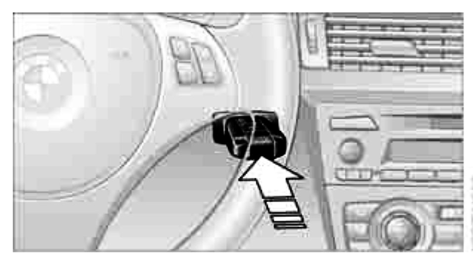
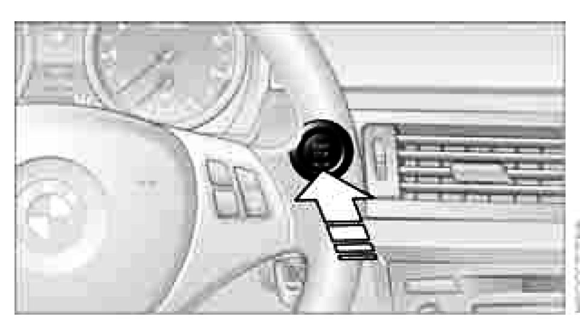

Convenient Access (Keyless Start) Ignition Modes
Ignition lock

Insert the remote control all the way into the ignition lock.
- Radio readiness is switched on.
Individual electrical consumers can operate.
- The electric steering lock disengages audibly
Convenient access
If the car is equipped with convenient access, only insert the remote control into the ignition lock under special circumstances.
Removing the remote control from the ignition lock
- Do not forcibly pull the remote control out of the ignition lock as this may cause damage.
Before removing the remote control, push it all the way in to release the locking mechanism.
The ignition is switched off if it was on.
Automatic transmission
- You cannot take out the remote control unless the selector lever is in the P position: interlock.
Start/stop button

- Pressing the start/stop button switches radio readiness or the ignition on or off.
Note: The engine is started when you press the start/stop button and depress the clutch if the car has manual transmission, or the brake if the car has automatic transmission.
Radio readiness
- Individual electrical consumers can operate.
- The time and the outside temperature are displayed in the instrument cluster.
Radio readiness is switched off automatically:
- When the remote control is removed from the ignition lock
- In cars with convenient access, by touching the surface above the door lock.
Ignition on
- All electrical consumers can operate. The odometer and trip odometer are displayed in the instrument cluster.
Note: When the engine is off, please switch off the ignition and any unnecessary electrical consumers in order to preserve the battery.
Radio readiness and ignition off
- All indicator and warning lamps as well as displays in the instrument cluster go out.